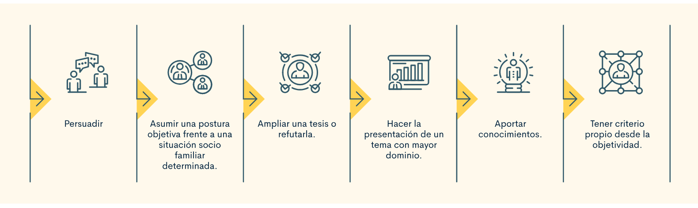
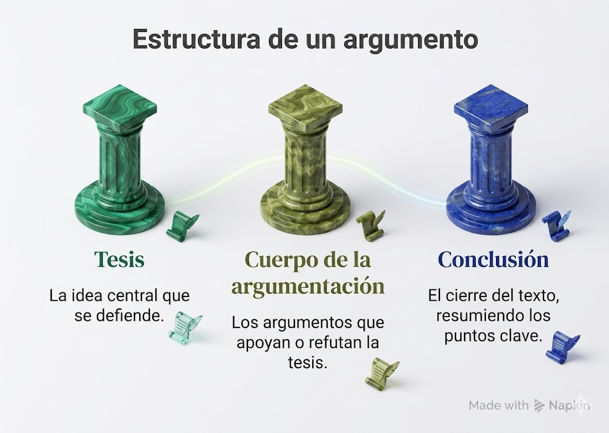
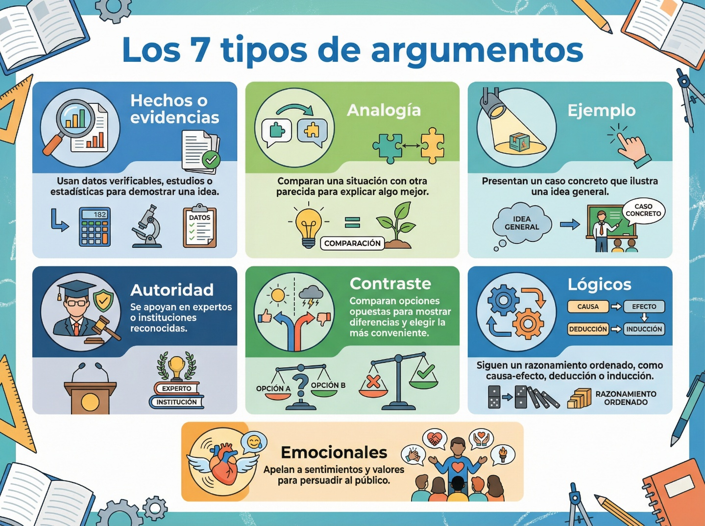
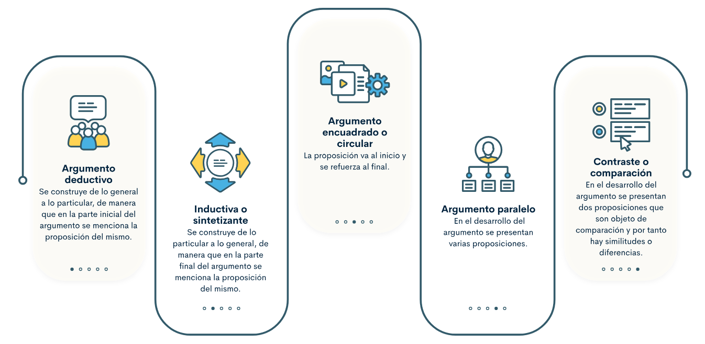
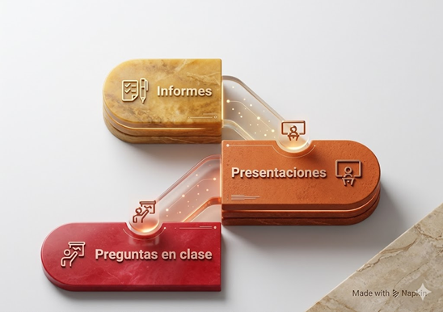
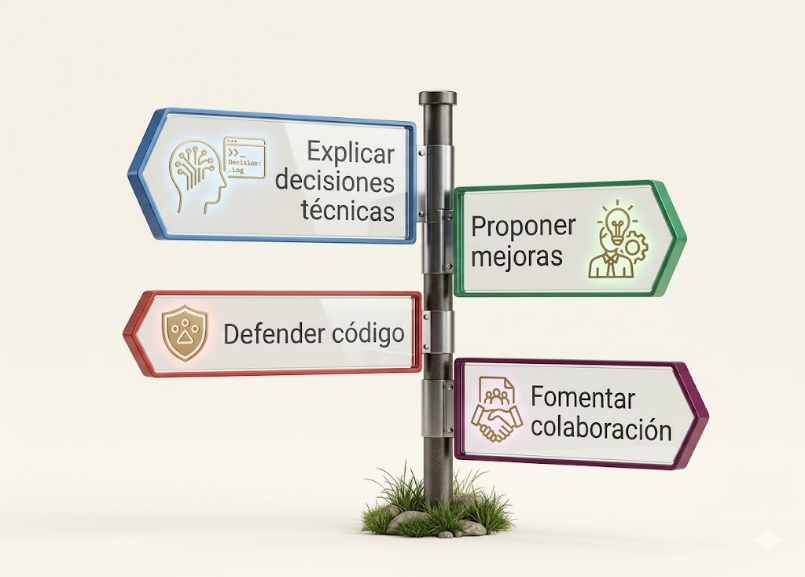

En el desarrollo web no basta con programar: también debes explicar, defender y justificar tus decisiones.
Cuando eliges una interfaz, propones una mejora o corriges una funcionalidad, necesitas comunicar con claridad por qué esa decisión tiene sentido.
Este recurso académico te permitirá aprender a construir argumentos claros en contextos académicos y laborales.
Aprenderás a ordenar tus ideas, sustentar opiniones y adaptar tu discurso cuando escribes, expones o trabajas en equipo.
🗣️
Comunicación clara
Expresar una idea técnica con orden evita malentendidos y mejora el trabajo colaborativo.
🧩
Justificación técnica
No se trata de opinar porque sí, sino de sostener una postura con razones, ejemplos y evidencias.
🤝
Trabajo en equipo
Argumentar bien facilita revisar código, presentar avances y acordar mejoras de forma profesional.
Objetivos de aprendizaje
🧠Expresar ideas con claridad en forma oral y escrita en contextos académicos y laborales.
💬Justificar opiniones y decisiones técnicas mediante razones comprensibles, organizadas y pertinentes.
🛠️Redactar argumentos relacionados con programación web usando tesis, razones, ejemplos y conclusión.
📚Diferenciar la argumentación oral y escrita, así como varios tipos de argumentos aplicables a problemas reales.
🤝Aplicar estrategias discursivas asertivas en actividades colaborativas, exposiciones, informes y revisión de código.
Contenido
Explora los módulos del tema. La guía original se reorganiza aquí en una ruta visual e interactiva para que practiques la estructura del argumento de forma clara y secuencial.
¿Qué es argumentar?
Argumentar es presentar una idea y sostenerla con razones comprensibles. No basta afirmar algo; es necesario demostrar por qué esa afirmación tiene sentido, qué evidencia la respalda y qué efecto produce.
En la formación profesional, argumentar es también una práctica ética, porque implica analizar, cuestionar, proponer y refutar con respeto. Más que afirmar que algo está mal, un argumento pertinente explica qué puede mejorarse, por qué y con base en qué razones.
Ejemplo: no es lo mismo decir "Ese diseño está mal" que decir
"Ese diseño puede mejorar porque el contraste dificulta la lectura del usuario".

Reto rápido
Selecciona la opción que realmente constituye un argumento.
Elementos mínimos de un argumento útil
Postura claraLa audiencia debe identificar qué idea estás defendiendo.
Razón verificableNo basta con opinar; es necesario demostrar por qué tu idea tiene fundamento
Relación con el contextoEl argumento gana fuerza cuando se conecta con un problema real.
Respeto por el receptorArgumentar no es atacar, sino explicar para convencer con criterio.
Errores frecuentes al argumentar
Generalización
"Todas las páginas lentas están mal hechas" simplifica demasiado el problema.
Opinión sin sustento
"Ese framework no sirve" no explica criterios ni evidencia técnica.
Ataque personal
Cuestionar a la persona en lugar de la idea debilita el valor del argumento.

Cómo argumentar
Para argumentar bien necesitas preguntarte, formular hipótesis y observar el problema de forma completa.
Un argumento sólido conecta una idea central con razones, ejemplos y un cierre lógico.
TesisLa idea principal que vas a defender.
RazónLa explicación que sustenta tu postura.
EjemploUn caso concreto que hace visible la idea.
ConclusiónEl cierre que resume y reafirma el argumento.
Ordena la estructura
Haz clic en cada tarjeta en el orden correcto para construir un argumento completo.
Secuencia actual: Vacía
Ejemplo aplicado a programación web
Tesis
El diseño responsive es importante en una página web.
Razón
Permite que el sitio se adapte a diferentes dispositivos y evita errores de visualización.
Ejemplo
Un usuario puede consultar el formulario correctamente desde su celular sin hacer zoom excesivo.
Conclusión
Por eso, mejora la experiencia del usuario y la accesibilidad del producto.
Preguntas guía antes de escribir o exponer
¿Qué afirmo?Define la tesis con una sola idea central y sin rodeos.
¿Por qué?Incluye la razón principal que sostiene la postura.
¿Con qué ejemplo?Busca un caso concreto, dato o situación que vuelva visible la idea.
¿Cómo cierro?Retoma la tesis mostrando su utilidad o consecuencia.
Microcaso: de borrador débil a argumento completo
Borrador débil
"Hay que probar más la web porque sí."
Mejora
"La web debe probarse antes de publicarse porque los errores de formularios y navegación afectan la experiencia del usuario."
Cierre sólido
"Por eso, las pruebas previas reducen fallos visibles y mejoran la calidad del producto final."
Argumentación oral
La argumentación oral busca defender o criticar un punto de vista frente a otras personas. Se apoya en razonamientos lógicos y demostrables, pero también requiere tono adecuado, escucha activa y capacidad de responder en el momento.
InmediatezInteracciónClaridad al hablarSeguridad al exponer
Argumentación escrita
La argumentación escrita persuade o convence por medio de un texto organizado. Debe mantener adecuación al contexto, coherencia entre ideas y cohesión mediante conectores que guíen al lector hacia la conclusión.
PlanificaciónCoherenciaCohesiónPrecisión léxica
Gráfico comparativo
Fortalezas en la argumentación oral
Interacción
Espontaneidad
Apoyo visual
Fortalezas en la argumentación escrita
Planificación
Precisión
Registro permanente
¿Cuándo conviene argumentar oralmente?
Reuniones
Sirve para explicar una propuesta, responder objeciones y ajustar la idea en tiempo real.
Exposiciones
Permite combinar voz, gestos y apoyo visual para reforzar la tesis.
¿Cuándo conviene argumentar por escrito?
Informes
Resulta útil cuando necesitas dejar constancia y organizar con más detalle la evidencia.
Correos o foros
Permite revisar el tono, corregir la estructura y cuidar la precisión antes de enviar.


Hechos o evidencias
Usan datos verificables, pruebas o estudios para respaldar una idea.
Autoridad
Apelan a una fuente experta o institución reconocida para dar peso al argumento.
Ejemplo o analogía
Vuelven visible una idea abstracta comparándola o mostrándola en un caso concreto.
Lógico o contraste
Organizan el razonamiento por causa-efecto, diferencia o comparación de alternativas.
Ejemplos rápidos de uso
Hechos
"Las métricas muestran que el tiempo de carga subió tres segundos después del último cambio."
Autoridad
"La guía de accesibilidad recomienda este contraste para mejorar la lectura."
Analogía
"Una API funciona como un intermediario que recibe una solicitud y devuelve la respuesta adecuada."
Contraste
"Si mantenemos dos versiones del mismo componente, el mantenimiento será más costoso que unificarlo."


Tarjetas de respaldo
Haz clic en cada tarjeta para transformar una frase débil en un argumento sostenible.
En contexto académico
Sustentación
Defiendes una decisión de proyecto mostrando criterios, evidencia y resultado esperado.
Ensayo o informe
Necesitas ordenar ideas, citar fuentes y cerrar con una conclusión verificable.
En contexto laboral
Code review
Argumentas un cambio explicando impacto en rendimiento, mantenibilidad o legibilidad.
Reunión con cliente
Explicas por qué una mejora es prioritaria usando lenguaje comprensible y orientado a valor.
Conectores útiles
Para introducir una tesis:considero que, sostengo que, desde mi perspectiva
Para justificar:porque, ya que, debido a que
Para ejemplificar:por ejemplo, como se observa en, un caso concreto es
Para concluir:en conclusión, por lo tanto, en síntesis
Mini práctica de precisión
Elige el conector más adecuado para cada caso.
Conectores según la intención del mensaje
Para contrastar:sin embargo, no obstante, en cambio
Para añadir una razón:además, incluso, de igual manera
Para expresar consecuencia:por ello, por consiguiente, así que
Para matizar:en parte, desde cierto punto de vista, aunque
Actividades propuestas
Estas actividades te brindan apoyos prácticos para que prepares tu argumento con mayor claridad antes de grabarlo, escribirlo o presentarlo en equipo.
Actividad 1
Construye tu argumento
Responde en un párrafo: ¿por qué es importante probar una página web antes de publicarla?
Tesis
Argumentación
Conclusión y evaluación
Entregable: graba un video de 1 minuto y súbelo en formato reel.
Actividad 2
Mejora el mensaje
Convierte frases vagas en argumentos sustentables.
"Ese código está mal"
"La página no sirve"
"Ese diseño es feo"
Entregable: redacta un argumento sobre la importancia de comentar el código.
Actividad extra
Decisión técnica colaborativa
Explica a tu equipo por qué una mejora de usabilidad debe priorizarse en el siguiente sprint (periodo corto de trabajo donde el equipo organiza y desarrolla tareas esoecíficas).
Problema detectado
Evidencia observada
Impacto esperado
Entregable: presenta tu argumento en una reunión simulada de 2 minutos.
Generador de borrador argumentativo
Completa los campos y genera un argumento inicial que luego puedas editar o practicar oralmente.
Actividad interactiva: identifica la parte
Lee cada enunciado y selecciona si corresponde a tesis, razón, ejemplo o conclusión.
Evaluación
Comprueba lo que has aprendido. Selecciona la respuesta correcta y luego finaliza la evaluación para ver tu resultado.
1. ¿Qué significa argumentar?
2. ¿Cuál es el orden correcto de la estructura argumentativa?
3. ¿En cuál de los siguientes casos se usa la argumentación en el contexto laboral?
4. ¿Cuál de las siguientes opciones es un buen argumento?
5. ¿Por qué es importante argumentar en programación web?
Recursos para profundizar
Para ampliar tu comprensión sobre argumentación, te recomendamos explorar los siguientes recursos:
OVA del SENA: Argumentación
Objeto virtual de aprendizaje sobre comunicación oral y escrita con foco en argumentación.